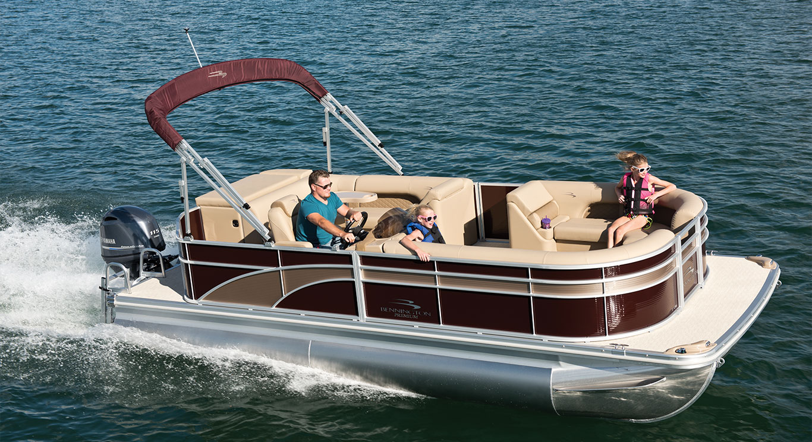
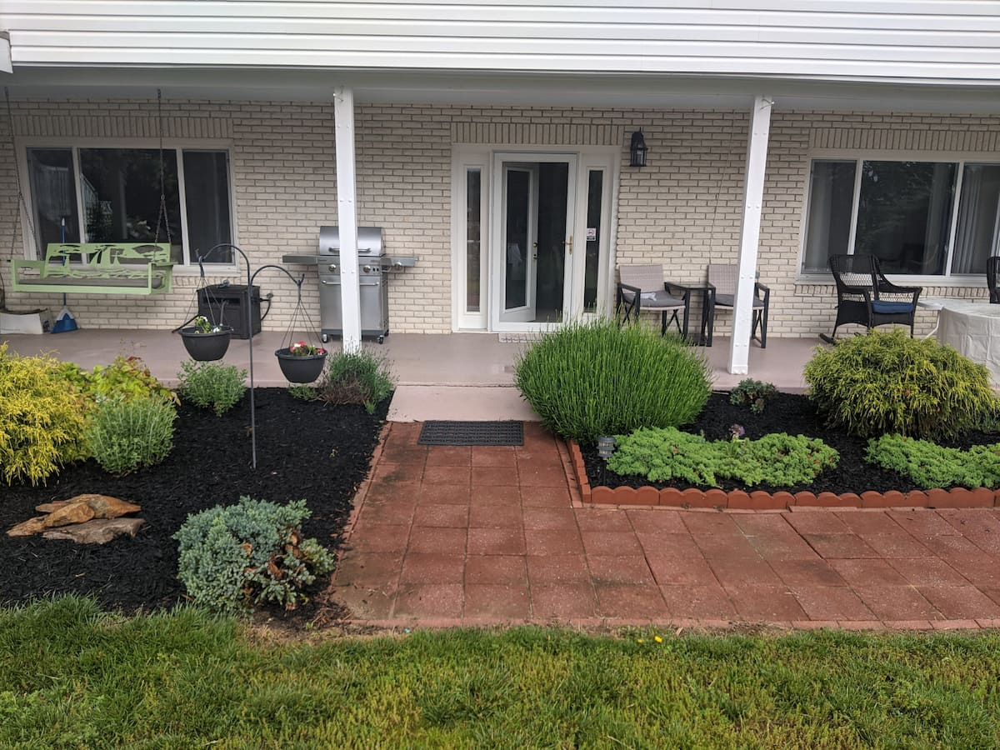
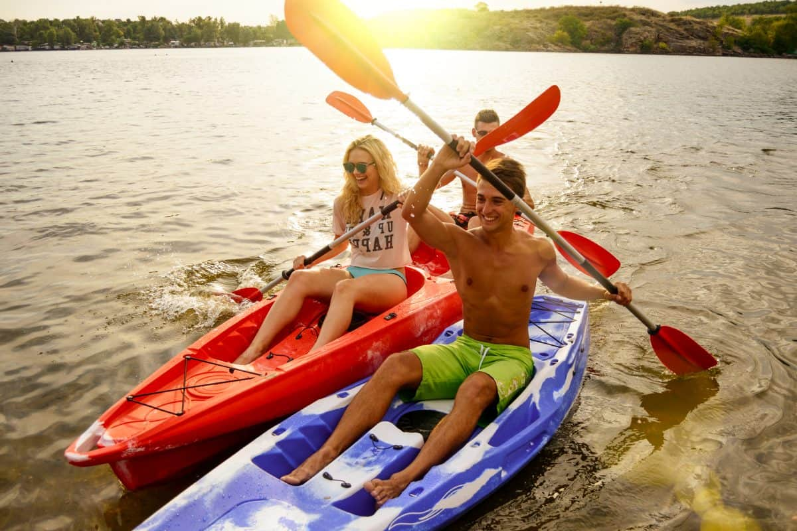

Located within Claytor Lake State Park, our office opens at 8:30am every day from Memorial Day until Labor Day. In April, May, September, and October we are open on weekends - weekdays by appointment only.
Motorized Boat Rentals
We offer a variety of motorized boats to fit anyone's need to get on the water. From fishermen to skiers to those simply wanting to relax, we've got you covered!
- 5 Pontoon Boats
- 2 Ski Boats
- 1 Fishing Boat
- 1 Waverunner
Family Suite Rental
Looking to stay within walking distance to Claytor Lake State Park? We now offer a 3 bedroom suite rental perfect for families looking to stay by the State Park and enjoy the water.
Non-Motorized Rentals
We offer a variety of paddlecraft for those who are looking to explore the waters around the State Park or venture to the far shore of the lake.
- Single-Person Sit-On-Top Kayaks
- Two-Person Canoes
- Four-Person Pedal Boat
Policies and FAQs
- Cancellation Policy
- 50% of rental fee charged if cancelled at the rental start time. Loss of the 20% deposit if cancelled within 24 hours of the rental start time. 10% charge (1/2 of deposit) if cancelled within 5 days of the rental start time.
- If you need to cancel please do so by responding to your confirmation email.
- Weather Policy
- If at the time of your rental the weather is such that the average boater would not go out, we will not charge a cancellation fee. Please note that cool, overcast days or spotty forecasts are not sufficient reason to cancel without being charged.
- Alcohol Policy
- ALCOHOL IS STRICTLY PROHIBITED ON ALL RENTAL CRAFT.
- Animal Policy
- Pets are welcome at no additional fee, but damage fees will incur if they are destructive.
- Licensing
- Though it is encouraged, you do not need a boating license in order to rent our watercraft. An exception is made with a motorboat rental or leasing business (Claytor Lake Water Sports) and completion of a dockside safety checklist. We go over this dockside safety checklist with you and you receive a temporary license for your rental.
- Renter/Operator of motorized boats must be at least 25 years old for groups of 6 or more, (Otherwise, renter/operator may be 21 years old) with a Valid Driver's License. All drivers (maximum 3 per watercraft) must be present at time of rental for dockside orientation. This is state law and each driver will be given a temporary operator's license.
- Please note that our liability insurance does not extend to you, the renter.
- PFDs / Lifejackets
- Personal Flotation Devices (PFDs), or lifejackets, are included with every rental. We have sizes from infant through XXXL.
- Multi-Day Rentals
- Multi-day rentals are possible though the boats must be docked between dusk and dawn. Absolutely no night time use.
- Watercraft Capacity
- Capacity listed per boat is a Maximum Capacity set for that watercraft that includes children and any persons that may be on a towable. No exceptions. Please DO NOT reserve a boat for groups that will regularly rotate unless you have dock access somewhere outside of the marina to do so.
- Fuel Costs
- Fuel is additional to Rental Fees. Be aware that ski boats use an average of 4 to 6 gallons per hour while pontoon boats use an average of 2 to 3 gallons per hour. A Visa or MasterCard is required to purchase fuel at the end of your rental.
- Other Information
- There is a $7 enterence fee per car to get into Claytor Lake State Park.
- Boats MAY NOT be taken to the dock at Picknick Shelters 1 and 2.